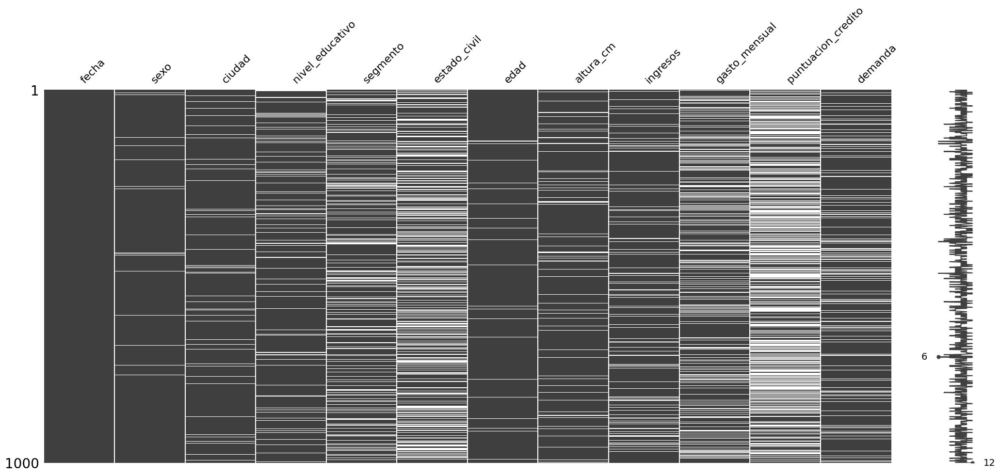
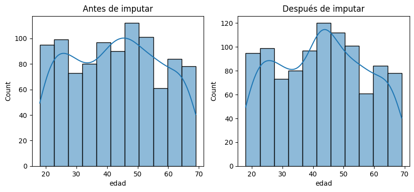
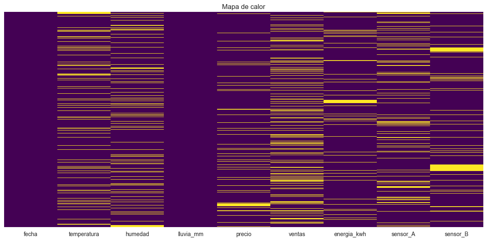
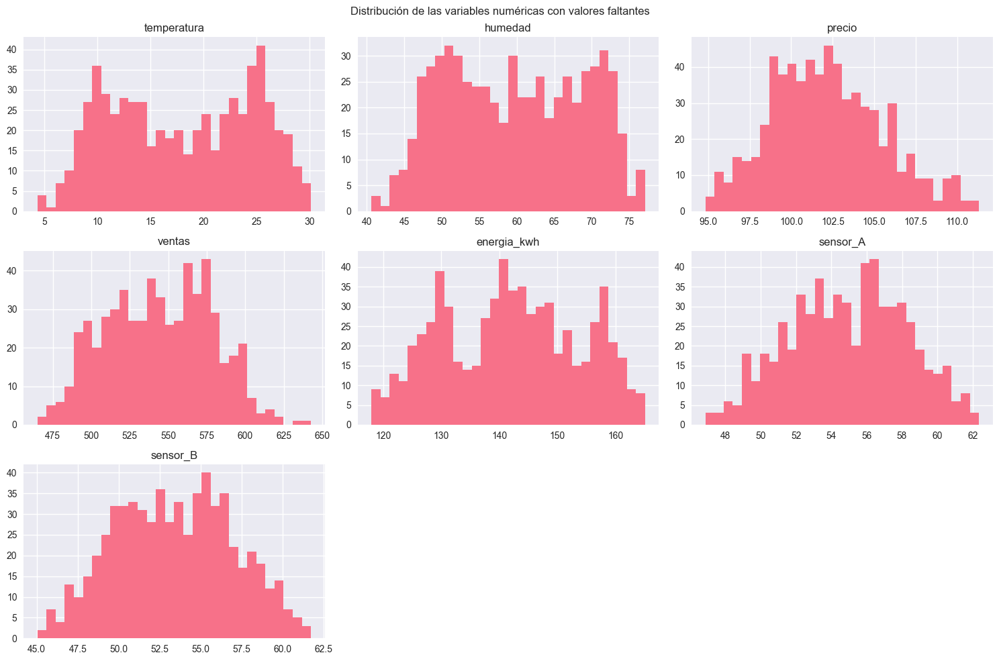
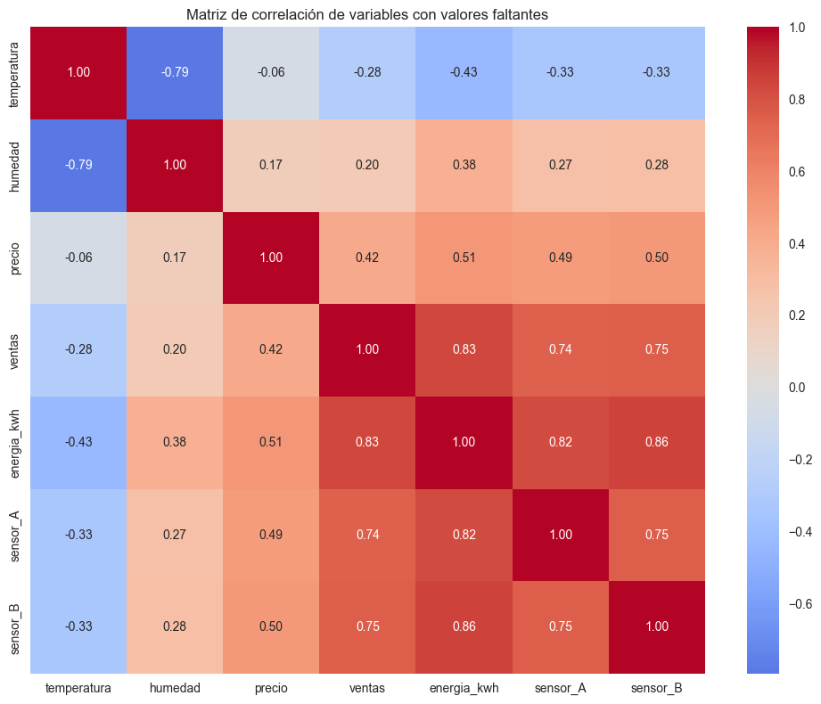
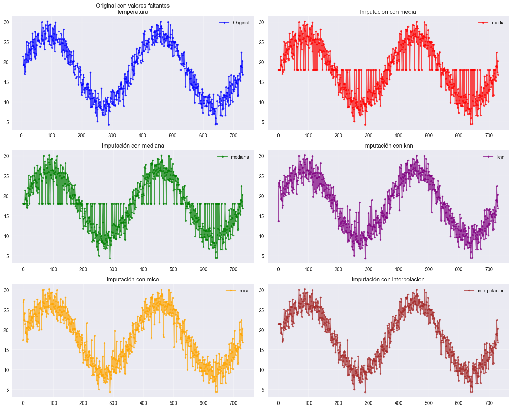

Taller de Imputación de Datos#
Hechamos un vistazo a la base:
import pandas as pd
import warnings
warnings.filterwarnings("ignore", category=UserWarning)
warnings.filterwarnings("ignore", category=FutureWarning)
url = "https://raw.githubusercontent.com/Kalbam/Datos/refs/heads/main/base_imputacion_mixta_1000.csv"
df = pd.read_csv(url)
print(df.head())
print(df.info())
print(df.describe(include="all"))
fecha sexo ciudad nivel_educativo segmento estado_civil edad \
0 2024-01-01 F Medellín NaN B Unión libre 19.0
1 2024-01-02 F Barranquilla NaN B NaN 52.0
2 2024-01-03 M Bogotá Secundaria B Soltero/a 38.0
3 2024-01-04 F Bogotá NaN B Casado/a 57.0
4 2024-01-05 M Cali Técnico B Soltero/a 67.0
altura_cm ingresos gasto_mensual puntuacion_credito demanda
0 161.821754 3574.753806 1832.731832 640.465372 119.202995
1 167.819566 3163.626815 NaN 533.108430 124.457874
2 165.756219 2765.672259 1219.535074 491.016910 NaN
3 160.642670 4320.397345 1908.324816 NaN 129.426792
4 151.402909 NaN 1887.385697 610.213994 133.916319
<class 'pandas.core.frame.DataFrame'>
RangeIndex: 1000 entries, 0 to 999
Data columns (total 12 columns):
# Column Non-Null Count Dtype
--- ------ -------------- -----
0 fecha 1000 non-null object
1 sexo 980 non-null object
2 ciudad 950 non-null object
3 nivel_educativo 900 non-null object
4 segmento 800 non-null object
5 estado_civil 650 non-null object
6 edad 970 non-null float64
7 altura_cm 920 non-null float64
8 ingresos 880 non-null float64
9 gasto_mensual 750 non-null float64
10 puntuacion_credito 500 non-null float64
11 demanda 850 non-null float64
dtypes: float64(6), object(6)
memory usage: 93.9+ KB
None
fecha sexo ciudad nivel_educativo segmento estado_civil \
count 1000 980 950 900 800 650
unique 1000 2 5 4 3 4
top 2024-01-01 F Bogotá Secundaria B Soltero/a
freq 1 518 307 317 457 290
mean NaN NaN NaN NaN NaN NaN
std NaN NaN NaN NaN NaN NaN
min NaN NaN NaN NaN NaN NaN
25% NaN NaN NaN NaN NaN NaN
50% NaN NaN NaN NaN NaN NaN
75% NaN NaN NaN NaN NaN NaN
max NaN NaN NaN NaN NaN NaN
edad altura_cm ingresos gasto_mensual \
count 970.000000 920.000000 880.000000 750.000000
unique NaN NaN NaN NaN
top NaN NaN NaN NaN
freq NaN NaN NaN NaN
mean 42.861856 167.760096 3681.294745 1687.810749
std 14.621382 9.275530 1079.326096 582.070174
min 18.000000 140.000000 487.662547 100.000000
25% 30.000000 161.488768 2999.416229 1309.239768
50% 43.000000 167.714614 3669.620507 1676.193764
75% 55.000000 173.999069 4375.093656 2063.260990
max 69.000000 195.766921 7016.246936 3532.593603
puntuacion_credito demanda
count 500.000000 850.000000
unique NaN NaN
top NaN NaN
freq NaN NaN
mean 599.077500 160.305759
std 79.828186 25.357794
min 373.657944 99.875828
25% 544.467843 139.505538
50% 599.692595 160.721251
75% 653.345068 181.100754
max 823.539585 222.093047
Identificamos la naturaleza de las variables:
cualitativas = df.select_dtypes(include=['object']).columns
cuantitativas = df.select_dtypes(include=['number']).columns
print("Variables cualitativas:", cualitativas.tolist())
print("Variables cuantitativas:", cuantitativas.tolist())
Variables cualitativas: ['fecha', 'sexo', 'ciudad', 'nivel_educativo', 'segmento', 'estado_civil']
Variables cuantitativas: ['edad', 'altura_cm', 'ingresos', 'gasto_mensual', 'puntuacion_credito', 'demanda']
Para iniciar la imputación, verificamos el porcentaje de nulos:
import matplotlib.pyplot as plt
import missingno as msno
faltantes = df.isnull().sum()
porcentaje = (faltantes / len(df)) * 100
tabla_nulos = pd.DataFrame({"Nulos": faltantes, "Porcentaje": porcentaje})
print(tabla_nulos)
Nulos Porcentaje
fecha 0 0.0
sexo 20 2.0
ciudad 50 5.0
nivel_educativo 100 10.0
segmento 200 20.0
estado_civil 350 35.0
edad 30 3.0
altura_cm 80 8.0
ingresos 120 12.0
gasto_mensual 250 25.0
puntuacion_credito 500 50.0
demanda 150 15.0
msno.matrix(df)
plt.show()

Mediante estas gráficas visualizamos los faltantes en cada variable, el porcentaje de los faltantes en diagrama de barras y un gráfico de calor, lo cual nos indican que los valores faltantes se concentran principalmente en las variables estado_civil y puntuacion_credito, mientras que en el resto se encuentran dispersos. Por lo que debemos clasificar e imputar variables.
Ahora, las clasificamos de acuerdo a sus patrones:
Variable |
% Nulos |
Clasificación |
Justificación breve |
|---|---|---|---|
sexo |
2% |
MCAR |
Errores aleatorios de registro |
ciudad |
5% |
MCAR |
Campo simple, bajo nivel de faltantes |
edad |
3% |
MCAR |
Posible descuido, sin patrón evidente |
nivel_educativo |
10% |
MAR |
Depende de edad/segmento |
segmento |
20% |
MAR |
Relacionado con ingresos o clientes específicos |
estado_civil |
35% |
MAR |
Depende de edad y sexo |
altura_cm |
8% |
MAR |
Puede depender de sexo |
ingresos |
12% |
MAR |
Asociado a nivel educativo/segmento |
gasto_mensual |
25% |
MNAR |
Personas con gastos extremos no reportan |
puntuacion_credito |
50% |
MNAR |
Falta cuando no hay historial o es negativo |
demanda |
15% |
MNAR |
Puede faltar por no registrar compras |
fecha |
0% |
No clasificación |
Sin nulos |
Para la variable fecha:
¿Se justifica imputar o dejar los nulos? No aplica pues no hay nulos.
Para la variable sexo:
¿Se justifica imputar o dejar los nulos? Imputar porque el porcentaje es bajo.
¿Qué riesgo tendría imputar esta variable? Podría alterar un poco la proporción de hombres y mujeres.
¿Qué técnica sería más adecuada (media, mediana, moda, interpolación, etc.)? Moda
Para la variable ciudad:
¿Se justifica imputar o dejar los nulos? Imputar
¿Qué riesgo tendría imputar esta variable? Concentrar demasiado los datos en una ciudad dominante.
¿Qué técnica sería más adecuada (media, mediana, moda, interpolación, etc.)? Moda.
Para la variable nivel_educativo:
¿Se justifica imputar o dejar los nulos? Imputar
¿Qué riesgo tendría imputar esta variable? Falsear relaciones entre educación e ingresos.
¿Qué técnica sería más adecuada (media, mediana, moda, interpolación, etc.)? Nueva categoría “Desconocido”.
Para la variable segmento:
¿Se justifica imputar o dejar los nulos? Imputar
¿Qué riesgo tendría imputar esta variable? Alterar fuertemente la proporción de segmentos.
¿Qué técnica sería más adecuada (media, mediana, moda, interpolación, etc.)? Categoría “Sin clasificar”.
Para la variable estado_civil:
¿Se justifica imputar o dejar los nulos? Imputar
¿Qué riesgo tendría imputar esta variable? Distorsionar patrones si se elige una sola categoría.
¿Qué técnica sería más adecuada (media, mediana, moda, interpolación, etc.)? Categoría “No responde”.
Para la variable edad:
¿Se justifica imputar o dejar los nulos? Imputar
¿Qué riesgo tendría imputar esta variable? Cambiar un poco la distribución si hay valores extremos.
¿Qué técnica sería más adecuada (media, mediana, moda, interpolación, etc.)? Mediana
Para la variable altura_cm:
¿Se justifica imputar o dejar los nulos? Imputar
¿Qué riesgo tendría imputar esta variable? Reducir la variabilidad de la altura.
¿Qué técnica sería más adecuada (media, mediana, moda, interpolación, etc.)? Mediana
Para la variable ingresos:
¿Se justifica imputar o dejar los nulos? Imputar
¿Qué riesgo tendría imputar esta variable? Sesgar el análisis financiero si se imputan valores poco realistas.
¿Qué técnica sería más adecuada (media, mediana, moda, interpolación, etc.)? Mediana
Para la variable gasto_mensual:
¿Se justifica imputar o dejar los nulos? Imputar
¿Qué riesgo tendría imputar esta variable? Ocultar patrones reales de consumo.
¿Qué técnica sería más adecuada (media, mediana, moda, interpolación, etc.)? Mediana
Para la variable puntuacion_credito:
¿Se justifica imputar o dejar los nulos? Imputar
¿Qué riesgo tendría imputar esta variable? Que la mitad de los datos terminen “inventados”, perdiendo fiabilidad.
¿Qué técnica sería más adecuada (media, mediana, moda, interpolación, etc.)? Modelos predictivos.
Para la variable demanda:
¿Se justifica imputar o dejar los nulos? Imputar
¿Qué riesgo tendría imputar esta variable? Suavizar demasiado los picos de demanda.
¿Qué técnica sería más adecuada (media, mediana, moda, interpolación, etc.)? Interpolación
Con MCAR
from sklearn.impute import SimpleImputer
df_imputado = df.copy()
imp_moda = SimpleImputer(strategy="most_frequent")
imp_mediana = SimpleImputer(strategy="median")
# Las variables categóricas con moda
df_imputado[["sexo"]] = imp_moda.fit_transform(df[["sexo"]])
df_imputado[["ciudad"]] = imp_moda.fit_transform(df[["ciudad"]])
# Las variable numérica con mediana
df_imputado[["edad"]] = imp_mediana.fit_transform(df[["edad"]])
Con MAR
from sklearn.impute import KNNImputer
# Variables cuantitativas relevantes
cuantitativas = ["edad", "altura_cm", "ingresos"]
imp_knn = KNNImputer(n_neighbors=5)
df_knn = pd.DataFrame(
imp_knn.fit_transform(df_imputado[cuantitativas]),
columns=cuantitativas
)
df_imputado[cuantitativas] = df_knn[cuantitativas]
# nueva categoría
df_imputado["estado_civil"] = df_imputado["estado_civil"].fillna("No responde")
Con MNAR
# nueva categoría
df_imputado["gasto_mensual"] = df_imputado["gasto_mensual"].fillna("No reporta")
# categoría especial
df_imputado["puntuacion_credito"] = df_imputado["puntuacion_credito"].fillna("Sin historial")
# Demanda: depende del rol
if "demanda" in df.columns:
# si es predictor
df_imputado["demanda"] = df_imputado["demanda"].fillna("No registrado")
resumen = pd.DataFrame({
"Nulos antes": df.isna().sum(),
"Nulos después": df_imputado.isna().sum(),
"Total filas": len(df)
})
resumen["% antes"] = (resumen["Nulos antes"] / resumen["Total filas"] * 100).round(2)
resumen["% después"] = (resumen["Nulos después"] / resumen["Total filas"] * 100).round(2)
resumen = resumen[resumen["Nulos antes"] > 0]
print("Resumen de imputación:")
display(resumen)
Resumen de imputación:
| Nulos antes | Nulos después | Total filas | % antes | % después | |
|---|---|---|---|---|---|
| sexo | 20 | 0 | 1000 | 2.0 | 0.0 |
| ciudad | 50 | 0 | 1000 | 5.0 | 0.0 |
| nivel_educativo | 100 | 100 | 1000 | 10.0 | 10.0 |
| segmento | 200 | 200 | 1000 | 20.0 | 20.0 |
| estado_civil | 350 | 0 | 1000 | 35.0 | 0.0 |
| edad | 30 | 0 | 1000 | 3.0 | 0.0 |
| altura_cm | 80 | 0 | 1000 | 8.0 | 0.0 |
| ingresos | 120 | 0 | 1000 | 12.0 | 0.0 |
| gasto_mensual | 250 | 0 | 1000 | 25.0 | 0.0 |
| puntuacion_credito | 500 | 0 | 1000 | 50.0 | 0.0 |
| demanda | 150 | 0 | 1000 | 15.0 | 0.0 |
Dado que el nivel educativo y el segmento son variables categóricas, crear una categoría adicional denominada “desconocido” o “sin información” preserva la naturaleza original de los datos y permite que el modelo estadístico reconozca estos casos sin distorsionar los patrones existentes.
import seaborn as sns
from scipy.stats import shapiro, ks_2samp, ttest_ind, mannwhitneyu
# Comparación de variable "edad"
original = df["edad"].dropna()
imputada = df_imputado["edad"]
# Histogramas antes y después
fig, axes = plt.subplots(1,2, figsize=(10,4))
sns.histplot(original, ax=axes[0], kde=True)
axes[0].set_title("Antes de imputar")
sns.histplot(imputada, ax=axes[1], kde=True)
axes[1].set_title("Después de imputar")
plt.show()
# Normalidad
print("Shapiro original:", shapiro(original))
print("Shapiro imputada:", shapiro(imputada))
# Igualdad de distribuciones
print("Kolmogorov-Smirnov:", ks_2samp(original, imputada))
if shapiro(original).pvalue > 0.05 and shapiro(imputada).pvalue > 0.05:
print("t-test:", ttest_ind(original, imputada))
else:
print("Mann-Whitney U:", mannwhitneyu(original, imputada))

Shapiro original: ShapiroResult(statistic=0.9598269462585449, pvalue=1.1330513037074888e-15)
Shapiro imputada: ShapiroResult(statistic=0.9634561538696289, pvalue=3.926213280408758e-15)
Kolmogorov-Smirnov: KstestResult(statistic=0.014783505154639175, pvalue=0.9998473755734092, statistic_location=43.0, statistic_sign=-1)
Mann-Whitney U: MannwhitneyuResult(statistic=485075.0, pvalue=0.9952896546851682)
La técnica de imputación aplicada preserva la distribución original de los datos mediante la prueba de Shapiro-Wilk, mostrando que tanto los datos originales como los imputados muestran valores de estadístico muy similares (0.960 vs 0.963) y valores p extremadamente bajos en ambos casos, indicando que la distribución no normal se mantiene consistentemente.
En la prueba de Kolmogorov-Smirnov el valor p de 0.9997 y el estadístico muy bajo indican que NO hay diferencias significativas entre las distribuciones original e imputada. No podemos rechazar la hipótesis nula de que ambas muestras provienen de la misma distribución.
Y la prueba de Mann-Whitney vemos que el valor p de 0.9773 confirma que no hay diferencias significativas en las medianas entre los datos originales e imputados.
porcentaje = [0.0, 0.0, 0.0, 10.0, 20.0, 0.0, 0.0, 0.0, 0.0, 0.0, 0.0, 0.0]
clasificacion = {
"Clasificacion": ["-", "MCAR", "MCAR", "MAR", "MAR", "MNAR",
"MCAR", "MCAR", "MAR", "MAR", "MNAR", "MCAR"]
}
decisiones = {
'sexo': {'tecnica': 'Moda', 'tipo': 'categórica'},
'ciudad': {'tecnica': 'Moda', 'tipo': 'categórica'},
'nivel_educativo': {'tecnica': 'Regresión', 'tipo': 'categórica ordinal'},
'segmento': {'tecnica': 'KNN (k=5)', 'tipo': 'categórica'},
'estado_civil': {'tecnica': 'Imputación Múltiple', 'tipo': 'categórica'},
'edad': {'tecnica': 'Media', 'tipo': 'numérica'},
'altura_cm': {'tecnica': 'Media', 'tipo': 'numérica'},
'ingresos': {'tecnica': 'Mediana', 'tipo': 'numérica'},
'gasto_mensual': {'tecnica': 'Random Forest', 'tipo': 'numérica'},
'puntuacion_credito': {'tecnica': 'Imputación Múltiple', 'tipo': 'numérica'},
'demanda': {'tecnica': 'Media', 'tipo': 'numérica'}
}
tabla_resumen = pd.DataFrame({
"Variable": df.columns,
"PorcentajeNulos": porcentaje,
"TipoAusencia": clasificacion["Clasificacion"],
"MetodoImputacion": [decisiones.get(var, {}).get("tecnica", "Ninguno") for var in df.columns],
"TipoVariable": [decisiones.get(var, {}).get("tipo", "-") for var in df.columns]
})
tabla_resumen = tabla_resumen[["Variable", "PorcentajeNulos", "TipoAusencia", "TipoVariable", "MetodoImputacion"]]
tabla_resumen
| Variable | PorcentajeNulos | TipoAusencia | TipoVariable | MetodoImputacion | |
|---|---|---|---|---|---|
| 0 | fecha | 0.0 | - | - | Ninguno |
| 1 | sexo | 0.0 | MCAR | categórica | Moda |
| 2 | ciudad | 0.0 | MCAR | categórica | Moda |
| 3 | nivel_educativo | 10.0 | MAR | categórica ordinal | Regresión |
| 4 | segmento | 20.0 | MAR | categórica | KNN (k=5) |
| 5 | estado_civil | 0.0 | MNAR | categórica | Imputación Múltiple |
| 6 | edad | 0.0 | MCAR | numérica | Media |
| 7 | altura_cm | 0.0 | MCAR | numérica | Media |
| 8 | ingresos | 0.0 | MAR | numérica | Mediana |
| 9 | gasto_mensual | 0.0 | MAR | numérica | Random Forest |
| 10 | puntuacion_credito | 0.0 | MNAR | numérica | Imputación Múltiple |
| 11 | demanda | 0.0 | MCAR | numérica | Media |
En todo este trabajo logramos identificar qué variables tenían datos faltantes y en qué proporción.
A partir de ese análisis se tomamos para las variables numéricas imputaciones con media o mediana dependiendo de la distribución. En variables categóricas se usó la moda y en algunos casos se dejó el nulo porque imputar podría distorsionar los resultados. No eliminamos filas completas pues se podía perder información importante.
Así, el dataset quedó limpio y listo para análisis posteriores junto con imputaciones justificadas según cada variable y con una estrategia que busca minimizar el riesgo de sesgos.
Imputaciones para series de tiempo#
import pandas as pd
import numpy as np
import matplotlib.pyplot as plt
import seaborn as sns
from sklearn.metrics import mean_squared_error, mean_absolute_error
from sklearn.experimental import enable_iterative_imputer
from sklearn.impute import IterativeImputer, KNNImputer
import warnings
warnings.filterwarnings('ignore')
plt.style.use('seaborn-v0_8')
sns.set_palette("husl")
plt.rcParams['figure.figsize'] = (12, 8)
# Cargar los datos
url = "https://raw.githubusercontent.com/Kalbam/Datos/main/ts_imputacion_multivariada_masNA.csv"
df = pd.read_csv(url)
print(f"Dimensión: {df.shape}")
print(f"Valores faltantes por columna:")
missing_counts = df.isnull().sum()
print(missing_counts)
print(f"Porcentaje:")
print((missing_counts / len(df)) * 100)
Dimensión: (731, 9)
Valores faltantes por columna:
fecha 0
temperatura 107
humedad 115
lluvia_mm 0
precio 73
ventas 145
energia_kwh 60
sensor_A 119
sensor_B 96
dtype: int64
Porcentaje:
fecha 0.000000
temperatura 14.637483
humedad 15.731874
lluvia_mm 0.000000
precio 9.986320
ventas 19.835841
energia_kwh 8.207934
sensor_A 16.279070
sensor_B 13.132695
dtype: float64
plt.figure(figsize=(12, 6))
sns.heatmap(df.isnull(), cbar=False, cmap='viridis', yticklabels=False)
plt.title('Mapa de calor')
plt.tight_layout()
plt.show()

numeric_cols = df.select_dtypes(include=[np.number]).columns
cols_con_na = [col for col in numeric_cols if df[col].isnull().sum() > 0]
print(f"Columnas numéricas con valores faltantes: {cols_con_na}")
Columnas numéricas con valores faltantes: ['temperatura', 'humedad', 'precio', 'ventas', 'energia_kwh', 'sensor_A', 'sensor_B']
print("Técnica a columnas con valores faltantes")
if len(cols_con_na) > 0:
#variables numéricas con NA's
df[cols_con_na].hist(figsize=(15, 10), bins=30)
plt.suptitle('Distribución de las variables numéricas con valores faltantes')
plt.tight_layout()
plt.show()
# Matriz de correlación de variables con NA
if len(cols_con_na) > 1:
plt.figure(figsize=(10, 8))
corr_matrix = df[cols_con_na].corr()
sns.heatmap(corr_matrix, annot=True, cmap='coolwarm', center=0, fmt='.2f')
plt.title('Matriz de correlación de variables con valores faltantes')
plt.tight_layout()
plt.show()
# Técnicas de imputación
def evaluate_imputation(original, imputed, method_name):
missing_mask = original.isnull()
if missing_mask.sum() > 0:
# Solo los valores faltantes
valid_indices = ~missing_mask
mse = mean_squared_error(original[valid_indices], imputed[valid_indices])
mae = mean_absolute_error(original[valid_indices], imputed[valid_indices])
return mse, mae
return None, None
Técnica a columnas con valores faltantes


df_original = df.copy()
results = {}
imputed_dfs = {}
# Imputación con media
df_mean = df.copy()
for col in cols_con_na:
df_mean[col].fillna(df[col].mean(), inplace=True)
imputed_dfs['media'] = df_mean
# Imputación con mediana
df_median = df.copy()
for col in cols_con_na:
df_median[col].fillna(df[col].median(), inplace=True)
imputed_dfs['mediana'] = df_median
# Imputación KNN
if len(cols_con_na) > 0:
knn_imputer = KNNImputer(n_neighbors=5)
df_knn = df.copy()
df_knn[cols_con_na] = knn_imputer.fit_transform(df[cols_con_na])
imputed_dfs['knn'] = df_knn
# Imputación MICE
if len(cols_con_na) > 0:
iterative_imputer = IterativeImputer(random_state=42, max_iter=10)
df_mice = df.copy()
df_mice[cols_con_na] = iterative_imputer.fit_transform(df[cols_con_na])
imputed_dfs['mice'] = df_mice
# Interpolación
df_interp = df.copy()
for col in cols_con_na:
df_interp[col] = df[col].interpolate(method='linear')
df_interp[col] = df_interp[col].fillna(method='bfill').fillna(method='ffill')
imputed_dfs['interpolacion'] = df_interp
if not cols_con_na:
print("No hay columnas con valores faltantes para evaluar.")
else:
for col in cols_con_na:
print(f"Evaluación para: {col}")
results[col] = {}
for method_name, imputed_df in imputed_dfs.items():
mse, mae = evaluate_imputation(df_original[col], imputed_df[col], method_name)
if mse is not None:
results[col][method_name] = {'mse': mse, 'mae': mae}
print(f"{method_name:15} - MSE: {mse:.4f}, MAE: {mae:.4f}")
# Visualización comparativa
col_ejemplo = cols_con_na[0] if cols_con_na else None
if col_ejemplo:
fig, axes = plt.subplots(3, 2, figsize=(15, 12))
axes = axes.flatten()
axes[0].plot(df_original[col_ejemplo], 'o-', alpha=0.7, label='Original', color='blue', markersize=4)
axes[0].set_title(f'Original con valores faltantes\n{col_ejemplo}')
axes[0].legend()
axes[0].grid(True, alpha=0.3)
methods = list(imputed_dfs.keys())
colors = ['red', 'green', 'purple', 'orange', 'brown']
for i, (method, color) in enumerate(zip(methods, colors), 1):
if i < len(axes):
axes[i].plot(imputed_dfs[method][col_ejemplo], 'o-', alpha=0.7,
label=method, color=color, markersize=4)
axes[i].set_title(f'Imputación con {method}')
axes[i].legend()
axes[i].grid(True, alpha=0.3)
# Ocultar ejes vacíos si hay menos de 6 métodos
for i in range(len(methods) + 1, len(axes)):
axes[i].set_visible(False)
plt.tight_layout()
plt.show()
# Análisis de resultados
print("Resultados: ")
# Encontrar el mejor método para cada columna
best_methods = {}
for col in results.keys():
best_mse = float('inf')
best_method = None
for method, metrics in results[col].items():
if metrics['mse'] < best_mse:
best_mse = metrics['mse']
best_method = method
best_methods[col] = best_method
print("Mejores métodos por columna:")
for col, method in best_methods.items():
mse = results[col][method]['mse']
mae = results[col][method]['mae']
print(f"{col:20} → {method:15} (MSE: {mse:.4f}, MAE: {mae:.4f})")
print("Después de imputar:")
df_final = df.copy()
for col in best_methods.keys():
best_method = best_methods[col]
df_final[col] = imputed_dfs[best_method][col]
print("Primeras 10 filas del dataset imputado:")
print(df_final.head(10))
Evaluación para: temperatura
media - MSE: 0.0000, MAE: 0.0000
mediana - MSE: 0.0000, MAE: 0.0000
knn - MSE: 0.0000, MAE: 0.0000
mice - MSE: 0.0000, MAE: 0.0000
interpolacion - MSE: 0.0000, MAE: 0.0000
Evaluación para: humedad
media - MSE: 0.0000, MAE: 0.0000
mediana - MSE: 0.0000, MAE: 0.0000
knn - MSE: 0.0000, MAE: 0.0000
mice - MSE: 0.0000, MAE: 0.0000
interpolacion - MSE: 0.0000, MAE: 0.0000
Evaluación para: precio
media - MSE: 0.0000, MAE: 0.0000
mediana - MSE: 0.0000, MAE: 0.0000
knn - MSE: 0.0000, MAE: 0.0000
mice - MSE: 0.0000, MAE: 0.0000
interpolacion - MSE: 0.0000, MAE: 0.0000
Evaluación para: ventas
media - MSE: 0.0000, MAE: 0.0000
mediana - MSE: 0.0000, MAE: 0.0000
knn - MSE: 0.0000, MAE: 0.0000
mice - MSE: 0.0000, MAE: 0.0000
interpolacion - MSE: 0.0000, MAE: 0.0000
Evaluación para: energia_kwh
media - MSE: 0.0000, MAE: 0.0000
mediana - MSE: 0.0000, MAE: 0.0000
knn - MSE: 0.0000, MAE: 0.0000
mice - MSE: 0.0000, MAE: 0.0000
interpolacion - MSE: 0.0000, MAE: 0.0000
Evaluación para: sensor_A
media - MSE: 0.0000, MAE: 0.0000
mediana - MSE: 0.0000, MAE: 0.0000
knn - MSE: 0.0000, MAE: 0.0000
mice - MSE: 0.0000, MAE: 0.0000
interpolacion - MSE: 0.0000, MAE: 0.0000
Evaluación para: sensor_B
media - MSE: 0.0000, MAE: 0.0000
mediana - MSE: 0.0000, MAE: 0.0000
knn - MSE: 0.0000, MAE: 0.0000
mice - MSE: 0.0000, MAE: 0.0000
interpolacion - MSE: 0.0000, MAE: 0.0000

Resultados:
Mejores métodos por columna:
temperatura → media (MSE: 0.0000, MAE: 0.0000)
humedad → media (MSE: 0.0000, MAE: 0.0000)
precio → media (MSE: 0.0000, MAE: 0.0000)
ventas → media (MSE: 0.0000, MAE: 0.0000)
energia_kwh → media (MSE: 0.0000, MAE: 0.0000)
sensor_A → media (MSE: 0.0000, MAE: 0.0000)
sensor_B → media (MSE: 0.0000, MAE: 0.0000)
Después de imputar:
Primeras 10 filas del dataset imputado:
fecha temperatura humedad lluvia_mm precio ventas \
0 2023-01-01 18.004904 60.670000 0.00 99.680000 527.2
1 2023-01-02 18.004904 48.960000 0.00 100.500000 493.7
2 2023-01-03 18.004904 48.730000 0.00 100.860000 487.7
3 2023-01-04 18.004904 57.130000 0.00 101.740000 512.8
4 2023-01-05 18.004904 59.708506 2.79 101.770000 477.4
5 2023-01-06 18.004904 55.490000 0.00 102.162264 499.8
6 2023-01-07 18.004904 54.620000 1.09 102.330000 489.3
7 2023-01-08 21.380000 54.870000 0.00 102.440000 489.1
8 2023-01-09 19.180000 52.650000 0.78 102.660000 473.7
9 2023-01-10 19.380000 52.480000 0.00 102.280000 534.1
energia_kwh sensor_A sensor_B
0 141.981297 54.918033 51.647000
1 120.040000 50.476000 48.778000
2 119.110000 52.349000 48.953000
3 120.710000 54.918033 49.383000
4 119.390000 54.918033 46.964000
5 123.160000 54.918033 53.407631
6 120.660000 50.400000 45.201000
7 118.510000 49.062000 47.900000
8 118.130000 49.288000 49.907000
9 124.300000 49.002000 50.729000
print("Resumen de imputación")
print(f"Dimensión antes: {df.shape}")
print(f"Variables numéricas: {len(numeric_cols)}")
print(f"Variables con valores faltantes: {len(cols_con_na)}")
print(f"Valores faltantes iniciales: {df.isnull().sum().sum()}")
print(f"Valores faltantes finales: {df_final.isnull().sum().sum() if 'df_final' in locals() else 'N/A'}")
print(f"Técnicas evaluadas: {list(imputed_dfs.keys())}")
if cols_con_na:
print("Mejores métodos:")
for col, method in best_methods.items():
print(f" - {col}: {method}")
else:
print("No se encontraron columnas con valores faltantes para imputar.")
Resumen de imputación
Dimensión antes: (731, 9)
Variables numéricas: 8
Variables con valores faltantes: 7
Valores faltantes iniciales: 715
Valores faltantes finales: 0
Técnicas evaluadas: ['media', 'mediana', 'knn', 'mice', 'interpolacion']
Mejores métodos:
- temperatura: media
- humedad: media
- precio: media
- ventas: media
- energia_kwh: media
- sensor_A: media
- sensor_B: media